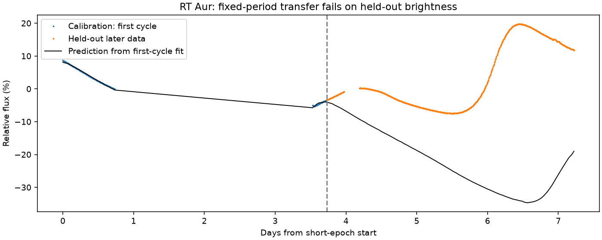

预选 13 个，完成 11 个，不可用 2 个，运行失败 0 个；最终周期正确 7 个。未选出、选错和不可用全部保留。
两种产品各自完整搜索；若只剩半/倍周期分歧，要求同一周期在两种产品的每个时段都有支持，再检查深浅交替及同类极小。等深、证据不足或其他竞争解释继续保留疑问。短时段的预测诊断不增加独立周期测量次数。
| 对象及产品证据 | 参考周期（天） | 第四版周期（天） | 评分 | 说明 |
|---|---|---|---|---|
| known-9473243 | 2.2669 | 2.26703523 | correct_period | 两产品周期一致 |
| known-159717514 | 0.566775 | 0.56684237 | correct_period | 两产品周期一致 |
| known-81709032 | 0.11157411 | 未选出 | abstained_or_unscored | 未确定周期 |
| unavailable-2597145 | 1.4143 | 未选出 | abstained_or_unscored | No supported non-fast SPOC data in the original preselected control query; not replaced. |
| unavailable-403072759 | 1.3029 | 未选出 | abstained_or_unscored | No supported non-fast SPOC data in the original preselected control query; not replaced. |
| contamination-259238257 | 不按目标周期评分 | 未选出 | abstained_or_unscored | 未确定周期 |
| contamination-294052132 | 不按目标周期评分 | 未选出 | abstained_or_unscored | 另一产品缺少相同周期或有其他竞争解释 |
| w-uma | 0.3336334 | 0.33362928 | correct_period | 逐次极小支持周期，产品/来源仍需复核 |
| rz-cas | 1.19525556 | 1.19525421 | correct_period | 两产品周期一致 |
| u-sge | 3.380656 | 3.38037672 | correct_period | 逐次极小支持周期，产品/来源仍需复核 |
| rt-aur | 3.72824 | 未选出 | abstained_or_unscored | 未确定周期 |
| sz-lyn | 0.12053525 | 0.12053546 | correct_period | 两产品周期一致 |
| rs-boo | 0.3773369 | 0.37733548 | correct_period | 两产品周期一致 |
用长时段的周期和形状，在短时段第一轮可见的数据上拟合相位、幅度及基线，再预测后面的亮度。预测比只取后段平均亮度更差，因此没有把短观测补算为通过。
